| 座號 | 照片 | 自我介紹 |
| 31 | 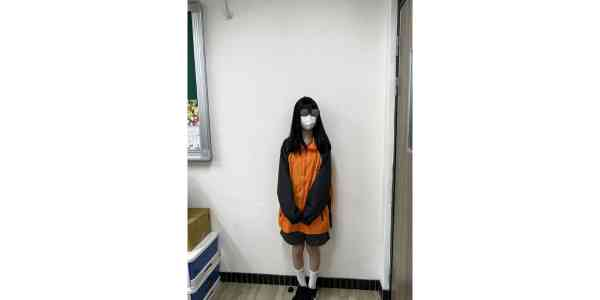 |
我是李O諠，我的興趣是唱歌跟跳舞，也喜歡照顧小朋友，國小有當過專門照顧一年級的小朋友 過。最喜歡的明星是justin bieber，他來自加拿大，也喜歡idle的minnie，她來自泰國。 |
| 32 | 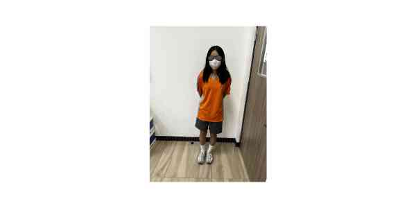 |
大家好，我叫宋O喬，我目前就讀國中一年級。我的個性害羞，平時喜歡游泳和打羽球，在國小時 練過各項運動，有田徑、舞蹈、民俗體育、樂樂棒球。未來想要就讀的是護理專科希望能在日常中 能學習到許多關於護理的知識。 |
| 33 | 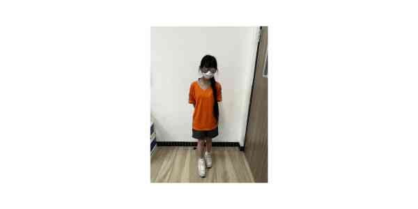 |
大家好我叫林O媗，很內向熟了後就還好。對蟲蟲很抗拒，興趣看動畫、玩遊戲、聽音樂，喜歡小狗 、小貓，很高興在712跟大家當同學天天開心ʕ •ᴥ•ʔ |
| 34 | 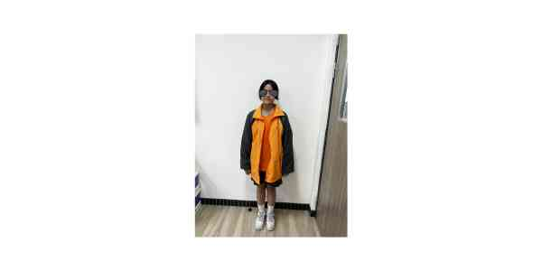 |
大家好，我是林O晴，我畢業的國小是東信國小，無聊時喜歡看小說和漫畫，我喜歡吃甜食，在家裡排 行第二，有一個大兩歲半的姐姐。 |
| 35 | 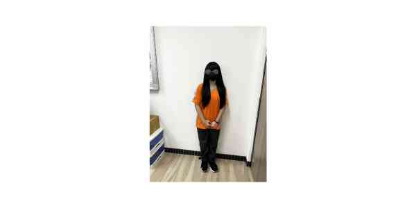 |
大家好，我是林O藼。我平常喜歡聽歌、唱歌，也很喜歡打遊戲。聽音樂可以讓我放鬆心情，唱歌的 時候也覺得很開心。打遊戲對我來說是一種紓壓方式，有時候也能訓練反應能力。希望在新的學期能 和大家好好相處，一起進步、一起留下美好的回憶！ |
| 36 | 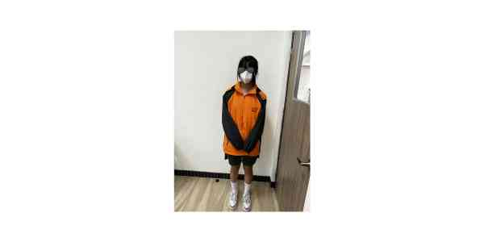 |
大家好，我是許O瑀 ! 剛開學我看起來比較安靜，但熟了之後就非常活潑~~在團體中我是個喜歡逗樂 大家的開心果 ! 但遇到不熟的人就瞬間尷尬了，平常我喜歡跟同學聊天和運動，即使很累我依舊話很多 充滿能量 ! |
| 37 | 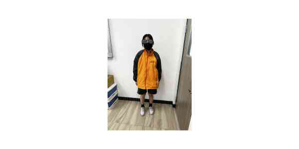 |
我是張O晞，興趣是游泳，夏天都會去爸爸公司游泳，喜歡看棒球，因為爸爸媽媽喜歡，我擅長整理資料，希望在未來的學習中能和大家好好相處。 |
| 38 | 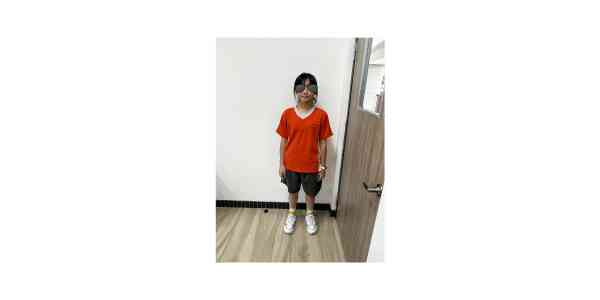 |
大 家好，我的名字叫張O暄、小名叫張公豬(主)，我的個性很外向，我興趣是柔道因為可以自我防衛還能把情緒發洩出來，我曾經學過珠心算、鋼琴、柔道和桌球。 珠心算心算學到段位珠算學到一級，參加過2024年中華盃心算暨數學全國公開邀請賽5、6年級組第3名，鋼琴參加過史坦巴哈音樂檢定鋼琴10級，謝謝大 家。 |
| 40 | 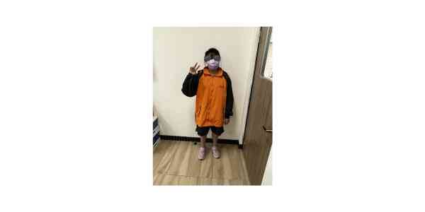 |
我是張O熒，就讀基隆市銘傳國中。我喜歡養爬蟲類的動物當寵物，但只要是會飛的東西我就都不喜歡。我喜歡打籃球，爸爸假日很長帶我去打籃球。我也喜歡挑戰一些遊樂設施，不只是遊樂園那種，還有像攀岩、走高蹺等可以挑戰的器材。我在家時喜歡追劇，常看的類型是喜劇。 |
| 41 | 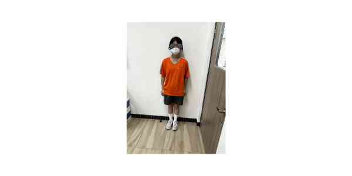 |
我是黃O甯，我的興趣是追劇和看電影，最喜歡的一部片「百萬人推理」，喜歡的演員有何曼希和羅晨恩，喜歡和朋友一起出去玩、聊天， 平時喜歡 看youtube的動畫和創作者們日常生活的影片。 |
| 42 | 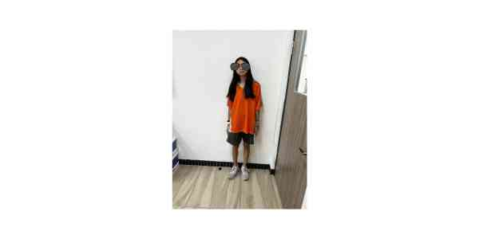 |
我是712班42號廖O伶，我喜歡追星我較擅長的科目是自然，希望我的國文和英文成績可以進步到75分，可以進前五名。 |
| 43 | 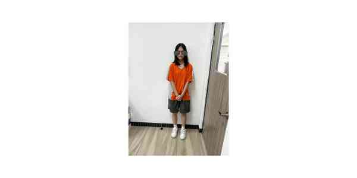 |
我是712班43號蕭O沂，畢業於信義國小，我的興趣是畫畫和騎腳踏車，跟不熟的人會比較內向，但熟了之後就會很瘋，希望接下來能慢慢跟大家變熟。 |